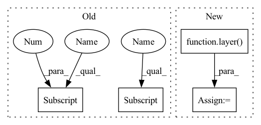

Pattern ID :17757
Before Change
def forward(self, inputs):
C4_lat = self.conv1(inputs[0])
C5_lat = self.conv2(inputs[1] )
Cglb_lat = self.conv3(inputs[1] )
return self.relu(C4_lat + C5_lat + Cglb_lat)
After Change
x = layer(x)
out = x if out is None else x+out
layer = getattr(self, f"conv{i+2}")
Cglb_lat = layer( inputs[-1])
return self.relu(out + Cglb_lat)
def fpn_feature_extractor(fpn_level, fea_channel, conv_block):In pattern: SUPERPATTERN
Frequency: 3
Non-data size: 4
Instances Fragment ID: 58490712
Project Name: zhanghengdev/mutualguide
Commit Name: 77156267d218aaa468e504be0ed373179fc281ee
Time: 2021-11-26
Author: zhangheng19931123@gmail.com
File Name: models/neck/ssd_neck.py
M Class Name: CEM
N Class Name: CEM
M Method Name: forward(2)
N Method Name: forward(2)
M Parent Class: nn.Module
N Parent Class: nn.Module
M File Name: models/neck/ssd_neck.py
N File Name: models/neck/ssd_neck.py
M Start Line: 26
M End Line: 29
N Start Line: 34
N End Line: 41
Before Change
self.relu = nn.ReLU(inplace=True)
def forward(self, inputs):
C4_lat = self.conv1(inputs[0] )
C5_lat = self.conv2(inputs[1])
Cglb_lat = self.conv3(inputs[1] )
return self.relu(C4_lat + C5_lat + Cglb_lat)
After Change
x = layer(x)
out = x if out is None else x+out
layer = getattr(self, f"conv{i+2}")
Cglb_lat = layer( inputs[-1])
return self.relu(out + Cglb_lat)
def fpn_feature_extractor(fpn_level, fea_channel, conv_block): Fragment ID: 58490713
Project Name: zhanghengdev/mutualguide
Commit Name: 77156267d218aaa468e504be0ed373179fc281ee
Time: 2021-11-26
Author: zhangheng19931123@gmail.com
File Name: models/neck/ssd_neck.py
M Class Name: CEM
N Class Name: CEM
M Method Name: forward(2)
N Method Name: forward(2)
M Parent Class: nn.Module
N Parent Class: nn.Module
M File Name: models/neck/ssd_neck.py
N File Name: models/neck/ssd_neck.py
M Start Line: 26
M End Line: 29
N Start Line: 34
N End Line: 41
Before Change
for idx, layer in enumerate(self.layers):
if len(srcs) == len(self.layers):
output = layer(output, query_pos, srcs_pos[idx] , srcs[idx], idx)
else:
output = layer(output, query_pos, srcs_pos[0] , srcs[0], 0)
if self.return_intermediate:
intermediate.append(output)After Change
intermediate = []
for idx, layer in enumerate(self.layers):
output = layer( output, query_pos, src_pos, src, idx, self.reg_head)
if self.return_intermediate:
intermediate.append(output)
Fragment ID: 58490692
Project Name: bwittmann/transoar
Commit Name: 93490790c06b3fe20dfd1eae015b8d79f8fd627a
Time: 2022-05-25
Author: bastian.wittmann@tum.de
File Name: transoar/models/necks/focused_decoder.py
M Class Name: FocusedDecoderModel
N Class Name: FocusedDecoderModel
M Method Name: forward(5)
N Method Name: forward(5)
M Parent Class: nn.Module
N Parent Class: nn.Module
M File Name: transoar/models/necks/focused_decoder.py
N File Name: transoar/models/necks/focused_decoder.py
M Start Line: 127
M End Line: 138
N Start Line: 77
N End Line: 81